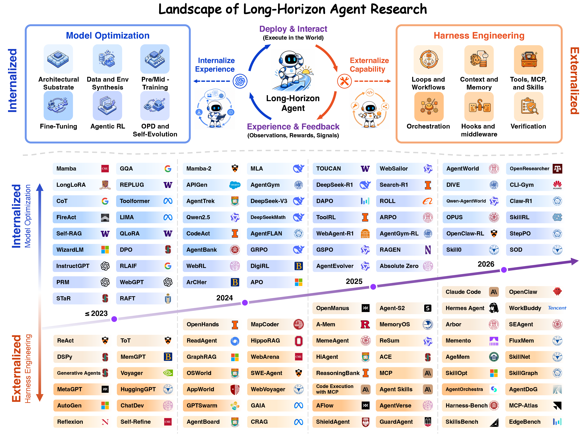
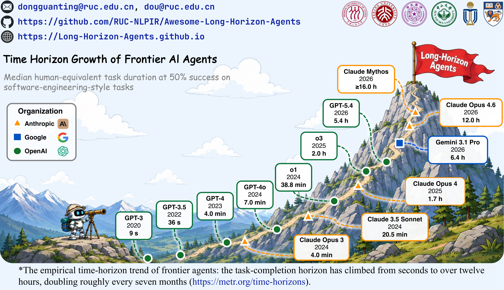
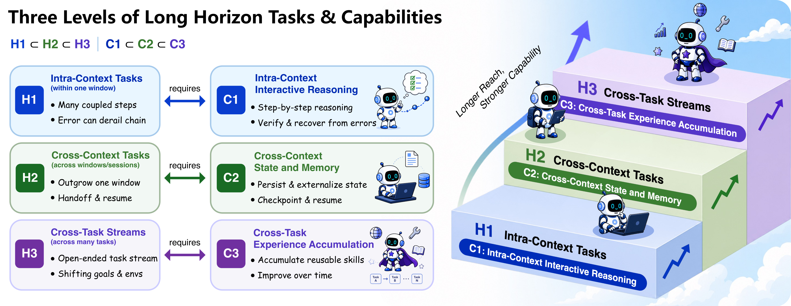
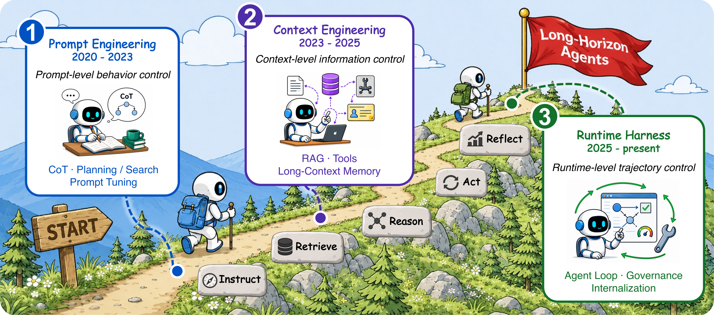
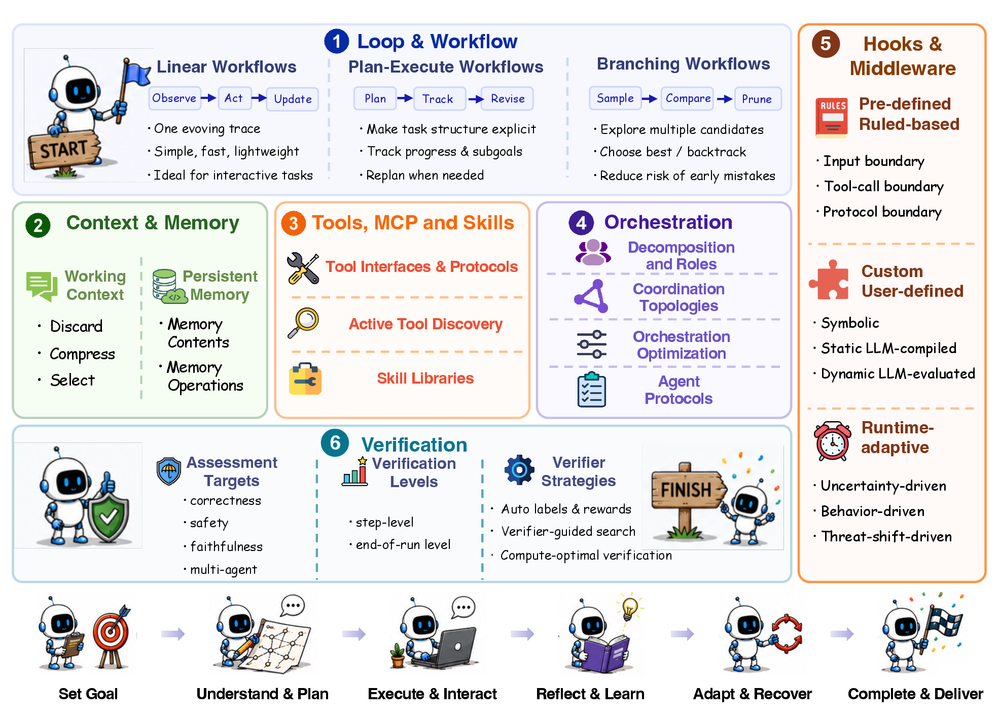
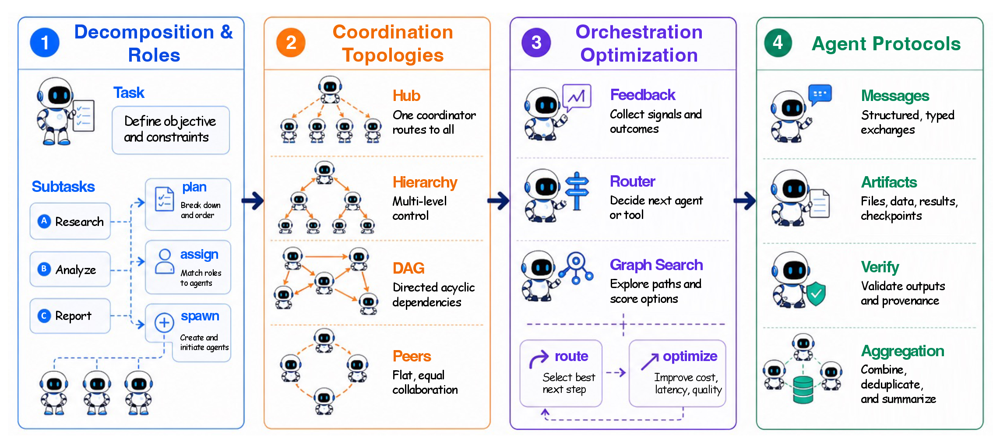
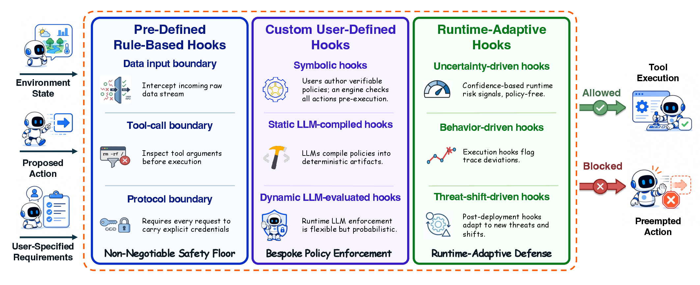
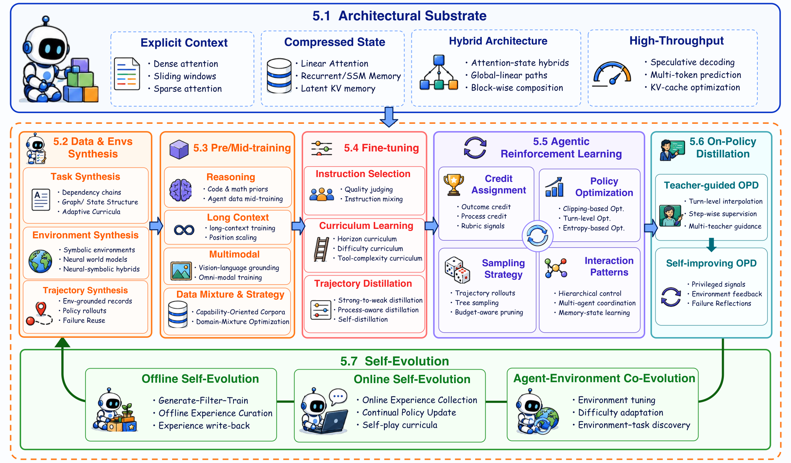
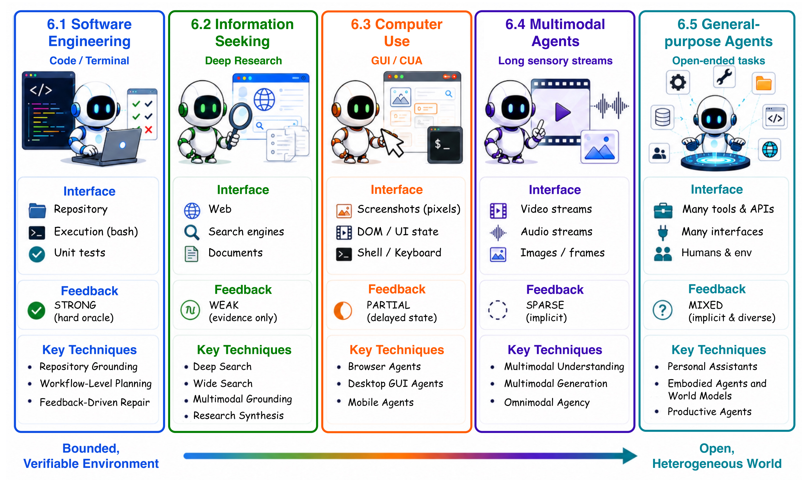

The landscape & open problems
Reliable long-horizon agency is a system property to be engineered and learned — not a byproduct of the base model alone. Much of the roadmap remains open.

Figure 9. The overall landscape: harness engineering and model optimization co-evolve, with experience traces carrying capability between them.
From seconds to a full workday
The task-completion horizon of frontier agents has climbed from seconds to well over twelve hours, roughly doubling every seven months. Long-horizon agency is fast becoming the central bottleneck for practical agent intelligence.

Figure 1. The empirical time-horizon trend of frontier agents: median human-equivalent task duration at 50% success on software-engineering-style tasks (source: metr.org/time-horizons).
A unified landscape for long-horizon agents
With the rapid advancement of LLM capabilities, expectations for AI agents are shifting from solving simple, single-turn tasks toward carrying out long-horizon tasks in the real world. We refer to such systems as long-horizon agents: agents that plan over extended horizons, interact with real-world environments, recover from their own mistakes, and adapt their strategies during execution.
Despite this progress, the field still lacks a shared definition and taxonomy. This paper offers a unified landscape by framing long-horizon agency as the co-evolution of an externalized harness and an internalized optimization, and organizes the survey around six connected perspectives.
Formalization
We formalize long-horizon agency as a harness-coupled decision process and distinguish it from long-running execution, autonomy, and self-evolution.
Evolution
We trace the field from prompt-level control to runtime agent systems through three nested, chronologically coherent stages.
Harness ✕ Optimization
We classify existing work through the complementary lenses of externalized harnesses and internalized optimization.
Applications & Frontiers
We organize five application forms by their interfaces, review benchmarks and resources, and lay out open problems.
Three levels of long-horizon tasks & capabilities
Long-horizon difficulty is a structural property, not a matter of clock time. We organize it along nested task levels H1 ⊂ H2 ⊂ H3, each requiring a matching capability tier C1 ⊂ C2 ⊂ C3.

Figure 2. Longer reach, stronger capability — each task level induces the capability it requires.
H1 Intra-Context
Many coupled steps within one window; step-by-step reasoning that must verify and recover before the chain derails.
H2 Cross-Context
Tasks outgrow a single window; the agent must persist and externalize state, then checkpoint, hand off, and resume.
H3 Cross-Task
Open-ended task streams with shifting goals; the agent accumulates reusable skills and improves over time.
From prompting to runtime harnesses
Three nested stages, each opened by a leap in the base model, organized around a new control surface, and closed by the limit that forces the next. Each stage absorbs the previous rather than replacing it.
Prompt Engineering
Steer behavior through the language of a single query, first eliciting multi-step reasoning from a fixed model.
Context Engineering
Control extends to the context the model is conditioned on — retrieved evidence, tools, and memory, curated under a budget.
Runtime Harnesses
The unit of control becomes the whole trajectory: a model coupled to a runtime that sustains one goal over many dependent steps.

Figure 3. Control widens from a single prompt, to the context of each step, to the whole trajectory — with capability progressively internalized into model weights at every stage.
Externalizing long-horizon capability
The harness is what turns a capable model into a reliable long-horizon agent. We organize it into six components that recur across essentially every contemporary agent.

Figure 4. The six harness components (Pillar I), from the inner control loop outward, wrapped by the agent's operating cycle: set goal → plan → execute → reflect → recover → deliver.
1 Loops & Workflows
Schedule model calls, actions, and feedback: linear, plan–execute, and branching search.
2 Context & Memory
Bound in-run state and persist what must survive across windows: working, factual, experiential memory.
3 Tools, MCP & Skills
Interface model decisions with external capabilities: interfaces, discovery, and skill libraries.
4 Orchestration
Coordinate beyond a single loop: decomposition, topologies, optimization, and agent protocols.
5 Hooks
Programmable enforcement — allow, block, or hand-off — via rule-based, user-defined, adaptive gates.
6 Verification
Assess correctness, safety, faithfulness at step, trajectory, and outcome levels.

Figure 5. Orchestration: tasks decomposed into roles, coordinated through topologies, optimized via routing, integrated through protocols.
Decomposition & Roles
How a long task is split and assigned — statically fixed or dynamically revised from feedback.
Coordination Topologies
Centralized hubs, decentralized peer debate, hierarchical forms; the DAG is the dominant abstraction.
Optimization & Protocols
Topologies can be searched, not hand-designed; agents exchange messages over protocols such as A2A and ACP.

Figure 6. Hooks by the origin and timing of the trigger: pre-defined rule-based, custom user-defined, runtime-adaptive.
Rule-based
Immutable, hard-coded invariants at the input, tool-call, and protocol boundaries.
User-defined
Domain-specific policies: symbolic, static LLM-compiled, or dynamic LLM-evaluated.
Runtime-adaptive
Triggers from live signals: uncertainty-driven, behavior-driven, threat-shift-driven.
Internalizing capability into the model
What the harness supplies from outside is progressively absorbed into model weights — through architecture, data, training, reinforcement learning, distillation, and self-evolution.

Figure 7. The Pillar II pipeline: an architectural substrate feeds data & environment synthesis, pre/mid-training, fine-tuning, agentic RL, and on-policy distillation, closed by a self-evolution loop.
Architectural Substrate
Explicit context, compressed state, hybrid architectures, and high-throughput decoding.
Data & Pre-training
Task, environment, and trajectory synthesis; reasoning, long-context, and multimodal mid-training.
Fine-tuning & Agentic RL
Instruction selection, curricula, and trajectory distillation; credit assignment and policy optimization.
Distillation & Self-Evolution
On-policy distillation and offline/online self-evolution with agent–environment co-evolution.
Five application forms, organized by interface
Long-horizon agents materialize across five interface-defined domains, each with its own harness demands and benchmarks.
SESoftware Engineering
Repository-scale coding over files, tests, and terminals — the proving ground for durable multi-step execution.
ISInformation Seeking
Deep research pipelines that interleave planning, retrieval, and writing across many sources.
CUComputer Use
GUI-facing control of desktops and browsers, grounding actions in live interface state.
MMMultimodal Agents
Vision–language control that couples perception with long-horizon action.
GPGeneral-Purpose
Personal and general assistants that carry consequential work across tools and sessions.

Figure 8. How harness components specialize across application domains and their benchmarks.
Cite this survey
@article{dong2026longhorizon, title = {Towards Long-Horizon Agents: A Survey}, author = {Dong, Guanting and Song, Xiaoshuai and Hu, Yuyang and Jin, Jiajie and Zhang, Chenghao and others}, journal = {arXiv preprint}, year = {2026}, url = {https://github.com/RUC-NLPIR/Awesome-Long-Horizon-Agents} }